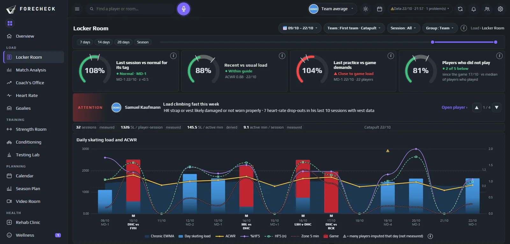
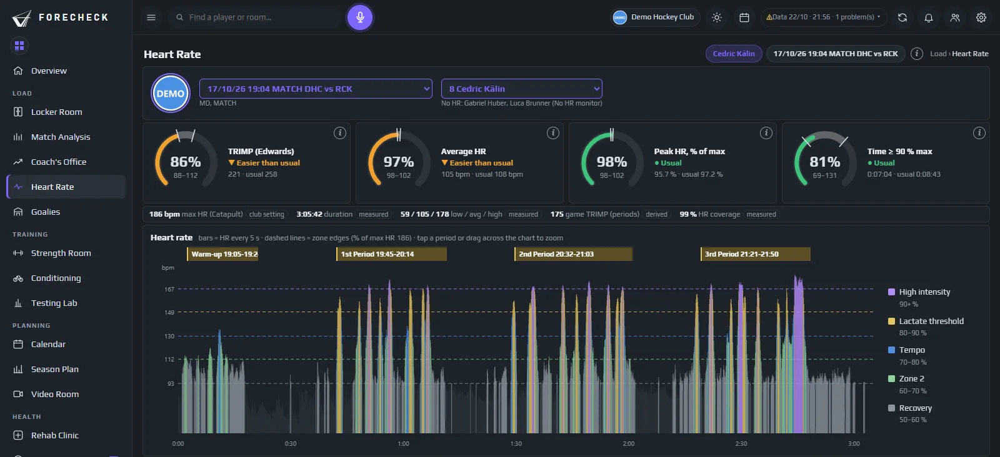

Locker Room · Heart Rate
Die Last kennen.
Bevor sie zubeisst.

Neu in dieser Saison
Herzfrequenz, Drittel für Drittel
iMehr
Wenn ein Gurt ausfällt, zeigt ForeCheck die Lücke und schlägt vor, was zu tun ist. Sie bestätigen, und nichts wird hinter Ihrem Rücken ergänzt.

Eisbelastung
Jeder Einsatz, jedes Training, jedes Spiel – schon erfasst
iMehr
Catapult-Einheiten synchronisieren sich ein paar Stunden nach dem Eis von selbst. ForeCheck macht daraus Volumen, Intensität und Skating-Anforderung pro Spieler, ohne dass jemand etwas exportieren oder zusammenführen muss.
Letzte Einheiten · Teamschnitt
| Datum | Einheit | Spieler | min | TRIMP | %HRmax |
|---|---|---|---|---|---|
| 10/10 | Eistraining | 14 | 70 | 112 | 74 |
| 09/10 | Spiel · auswärts | 19 | 62 | 168 | 81 |
| 08/10 | Eistraining | 13 | 75 | 142 | 77 |
| 07/10 | Eistraining | 14 | 77 | 136 | 78 |
| 06/10 | Spiel · Heim | 19 | 60 | 171 | 82 |
Herzfrequenz
Die Anstrengung sehen, nicht nur die Distanz
iMehr
Herzfrequenzzonen pro Spieler und Einheit. Sehen Sie, wer wirklich im roten Bereich gearbeitet hat und wer nur mitgelaufen ist.
Minuten in Herzfrequenzzonen · letztes Spiel
Akut:Chronisch
Spitzen erkannt, bevor sie schaden
iMehr
Ein Verhältnis von akuter zu chronischer Belastung für jeden Spieler, mit einem Wort zu jedem Status, damit das Gespräch bei den richtigen zwei Namen beginnt.
Hinweise heute
- #27 F1.483 Spiele in 4 Tagen · Eiszeit begrenzen
- #7 D1.42Nach Krankheit zurück · sanft aufbauen
- #14 F0.71Zweimal überzählig · Zusatz-Eistraining
Fragen, die es beantwortet
Was Sie damit entscheiden
- Wer braucht heute weniger Eiszeit?
- Wer ist unterbelastet und braucht Zusatzarbeit?
- War das Spiel von gestern Abend härter als sonst?
- Steigt die Teambelastung diese Woche zu schnell?